Differentiation
_________________________________________________________________________________
Exercise 1
(a)
| > |
q := sscanf("f*6#%\"xG6\"6#%*CopyrightGF%-%#ifG6%-%%typeG6$9$%)constantG-%&evalfG6#-%#LiG6#F.-.%\"qGF5F%F%F%","%m")[1]; |
| > |
plot(q(x),x=-1..10,-3..7); |
The function is undefined for  . It zero (and the graph is flat) at
. It zero (and the graph is flat) at  , then it drops down to
, then it drops down to 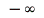
at  , then climbs back to zero at about
, then climbs back to zero at about 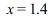
, and increases thereafter towards  .
.
(b)
When 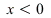
, the function  is undefined (because
is undefined (because 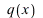
is). We have 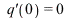
, and then 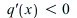
for 0 <  < 1 (because the graph is sloping downwards). The derivative is undefined again when
< 1 (because the graph is sloping downwards). The derivative is undefined again when  , but
, but 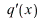
> 0 for  > 1 (because the graph is sloping upwards).
> 1 (because the graph is sloping upwards).
(c)
| > |
Q := (x,h) -> (q(x+h)-q(x))/h; |
(d)
It is clear from this that 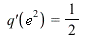
.
(e)
It is clear from this that 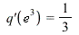
and 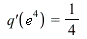
. We therefore guess that 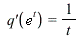
for all  . Moreover, given
. Moreover, given  > 0, we can write
> 0, we can write 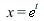
with 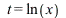
, so 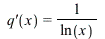
. This means that  is actually the same as a standard function called
is actually the same as a standard function called 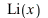
, which is defined by 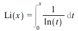
; you can enter ?Li for more information.
_________________________________________________________________________________
Exercise 2
(a)
The roots of  occur where the graph of
occur where the graph of  is flat, or in other words, the tangent line is horizontal. This occurs wherever
is flat, or in other words, the tangent line is horizontal. This occurs wherever  has a local maximum or a local minimum (and possibly also in some other places, called inflexion points).
has a local maximum or a local minimum (and possibly also in some other places, called inflexion points).
(b)
| > |
plot(f(x),x=-1.1..1.1); |
There are roots of  at
at  ,
,  and
and  . Between
. Between  and
and  we have a root of
we have a root of  at about
at about 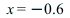
, corresponding to the top of the left-hand hump. Between  and
and  we have a root of
we have a root of 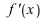
at about 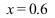
, corresponding to the top of the right-hand hump. Thus, Rolle's principle is satisfied.
 |
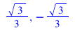 |
(12) |
| > |
plot([f(x),D(f)(x)],x=-1.1..1.1,-1..1); |
(c)
| > |
g := (x)->sin(x)+sin(3*x)/3; |
| > |
plot([g(x),D(g)(x)],x=-2*Pi..2*Pi); |
We can see roots of  at
at 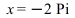
, 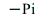
,  , and
, and 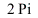
; in general, the roots are at  for integers
for integers 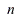
. Between  and
and  there are two maxima and one local minimum, giving three roots of
there are two maxima and one local minimum, giving three roots of  . (This is perfectly consistent with Rolle's principle, which says only that there is at least one root of
. (This is perfectly consistent with Rolle's principle, which says only that there is at least one root of  between
between 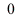
and  .) Similarly, between
.) Similarly, between 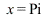
and 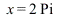
there are two minima and one local maximum for  , corresponding to the three places where the graph of
, corresponding to the three places where the graph of 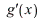
(in green) crosses the  -axis. We can find the location of the these roots as follows:
-axis. We can find the location of the these roots as follows:
Maple has reported only the roots between  and
and  . We see from the graph that these roots can be shifted by any multiple of
. We see from the graph that these roots can be shifted by any multiple of  , so the roots have the form
, so the roots have the form 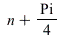
or 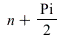
or 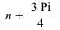
for integers  . (We can get Maple to produce this answer by setting _EnvAllSolution:=true; however, it reports the result in a convoluted and confusing form, so it is better to just inspect the graph.)
. (We can get Maple to produce this answer by setting _EnvAllSolution:=true; however, it reports the result in a convoluted and confusing form, so it is better to just inspect the graph.)
(d)
Suppose that  and
and  are two different roots of
are two different roots of  , so
, so 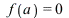
and 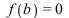
. As  moves from
moves from  to , the function
to , the function  cannot increase all the time (otherwise
cannot increase all the time (otherwise  would be greater than 0) and it cannot decrease all the time (otherwise would be less than 0). It must increase some of the time and decrease some of the time, so there must be some point at which it changes over from increasing to decreasing (or vice-versa), and at that point we will have .
would be greater than 0) and it cannot decrease all the time (otherwise would be less than 0). It must increase some of the time and decrease some of the time, so there must be some point at which it changes over from increasing to decreasing (or vice-versa), and at that point we will have .
(e)
As we see in the plot below, the roots of are at for integers  .
.
| > |
plot(tan(x),x=-Pi..Pi,-10..10,discont=true); |
The graph is always sloping upwards, so  > 0 for all
> 0 for all  . In fact, we have , which shows that for all
. In fact, we have , which shows that for all  . In any case, has no roots at all, contradicting Rolle's principle. So what goes wrong in the argument that we outlined? As
. In any case, has no roots at all, contradicting Rolle's principle. So what goes wrong in the argument that we outlined? As  moves from
moves from  to
to  , the function increases from
, the function increases from  up towards
up towards  , then jumps down discontinuously. When , neither nor
, then jumps down discontinuously. When , neither nor  is really well-defined.
is really well-defined.
| > |
plot(D(tan)(x),x=-Pi..Pi,0..10); |
_________________________________________________________________________________
Exercise 3
(a)
Put . Then and and . If then , so we cannot divide by , so is undefined. For any other value of  , we have and . This gives
, we have and . This gives
This is zero for or .
(b)
| > |
S := (y) -> diff(y,x,x,x)/diff(y,x) -
(3/2)*(diff(y,x,x)/diff(y,x))^2; |
(c)
| > |
simplify(diff(y,x,x,x)); |
 |
(25) |
(d)
| > |
z := (a*p^x+b)/(c*p^x+d); |
| > |
1/simplify(expand(1/%)); |
(e)
| > |
T := (u) -> diff(u,x)^(1/2) * diff(diff(u,x)^(-1/2),x,x); |
Now try some examples:
| > |
w := x^n; simplify([S(w),T(w)]); |
| > |
w := sin(x)^2; simplify([S(w),T(w)]); |
| > |
w := ln(x); simplify([S(w),T(w)]); |
In each case we see that . In fact, this is true for any . This can be shown as follows. We first use the chain rule to get:
We then differentiate once more, using the product rule and the chain rule, to get
We now multiply both sides by and simplify to get
or in different notation
as claimed.
_________________________________________________________________________________
Exercise 4
Here is the general formula for the derivative of  :
:
We can find the gradient at using the command:
| > |
m[0] := subs(x=a[0],diff(y,x)); |
However, it looks better if we simplify this:
| > |
m[0] := simplify(subs(x=a[0],diff(y,x))); |
The equation of the line of slope passing through is just .
We can plot this together with  as follows:
as follows:
| > |
plot([y,m[0]*(x-a[0])],x=0 .. 2*a[0]); |
To find the other roots, note that precisely when  has the form for some integer
has the form for some integer  .
.
Thus, we have precisely when , so ,
so . We write for this root.
The steps that we did for can be repeated for as shown below. Then to do (for example)
just change the  to and press ENTER four times.
to and press ENTER four times.
| > |
a[k] := exp((1/4-k/2)*Pi); |
| > |
m[k] := simplify(subs(x=a[k],diff(y,x))); |
| > |
plot([y,m[k]*(x-a[k])],x=0 .. 2*a[k]); |
We find that the tangent lines always meet the  -axis at or . This is not too hard to see directly.
-axis at or . This is not too hard to see directly.
In general we have . When we have and so
, so . The line has equation so the
intercept at  is , which is .
is , which is .